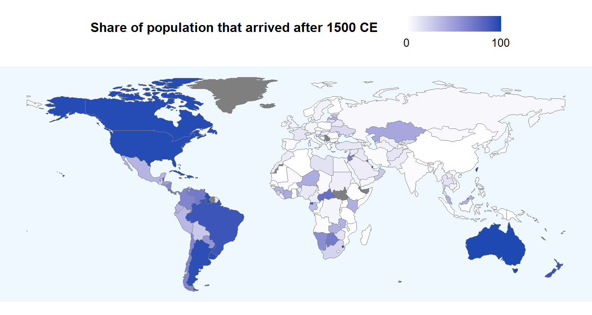

One of the most interesting economics papers I’ve ever read is the 2013 survey by Enrico Spolaore and Romain Wacziarg titled “How Deep Are the Roots of Economic Development?” There has long been an active, highly contentious discussion over why some countries today are rich while others are poor. As a citizen of a “poor” country, this was a big motivation for me to study economics.1
The proximate causes are relatively uncontroversial—Solow had it all laid out in 1956. Production turns inputs into output. More inputs mean more output. Some of your output are consumed, some are saved (“invested”) and turned into capital, which is then used as an input to produce more output. You can keep accumulating capital to grow your output, but over time, for a given state of technology, your capital accumulation will hit diminishing returns. You will then need to make technological progress to continue increasing output. Repeat until rich.
The Solow model is elegant, but it has the flavor of saying that a business is successful because it makes a lot of money. The deeper question is why come countries have managed to perform these pro-growth activities while others have not. Is it something in their culture? Maybe their geography? Maybe they had a Great Leader who put all the pieces in place?
This has been the research agenda of a number of empirical economic historians. Their work supplements that of traditional economic historians by quantifying the evidence for various hypothesized root causes of development. Spolaore and Wacziarg (SW) survey their findings as of 2013 using a unified dataset available here. What I want to do is chart some of the more interesting results.
Geography is a natural candidate for explaining the relative wealth of nations. Ever notice that cold countries tend to be richer than hot ones? In fact, it’s empirically well-founded:
library(rbokeh)
pretty <- function(n, d = 0) {
n <- format( round(n, digits = d), nsmall = d )
prettyNum(n, big.mark = ",", scientific = FALSE)
}
z <- lm(log(rgdpch_2005) ~ avelat, data = df)
df1 <- df %>%
select(Country = country, rgdpch_2005, avelat) %>%
drop_na() %>%
mutate(GDP.per.capita = paste0("$", pretty(rgdpch_2005, 0)))
figure(xlab = "Absolute latitude", ylab = "Log GDP per capita 2005",
width = 700, height = 450,
tools = c("pan", "wheel_zoom", "hover", "reset"),
toolbar_location = NULL) %>%
ly_points(avelat, log(rgdpch_2005), data = df1, hover = c(Country, GDP.per.capita)) %>%
ly_abline(z)What explains this intriguing correlation? SW divide proposed mechanisms into direct and indirect channels. Geography may have a direct influence on economic development through the effects of climate and diseases on agricultural and labor productivity. Or in cruder form, this is the argument that hotter weather makes for lazier people, which Rizal refuted in “The Indolence of the Filipino”.
Arguments for an indirect channel are, for me, more convincing. Geography influenced x, and x in turn influenced economic development. There may even be additional layers (x influenced y, y influenced z, etc.). A famous hypothesis comes from Jared Diamond’s 1997 book Guns, Germs, and Steel, which argues that climate and the ecosystems it supported influenced the onset of agriculture and domestication in a society, what is known as the Neolithic Revolution. In turn, societies that transitioned earlier would have had a head start in technological progress and centralized governments. This explains why Europeans had the advantage of “guns, germs, and steel” as they were conquering the civilizations of New World America in the 16th century.
To illustrate the Diamond hypothesis, the following plots population density in the year 1500 against the years since a country had undergone its Neolithic Revolution—population density being the best proxy available for relative economic development in a pre-industrial world. Again, a positive correlation is established.
df1 <- df %>%
select(Country = country, pd1500, agyears) %>%
drop_na() %>%
mutate(Pop.density.1500 = pretty(pd1500, 2),
Years.since.transition = pretty(agyears, 0))
z <- lm(log(pd1500) ~ agyears, data = df1)
figure(xlab = "Years since neolitic revolution", ylab = "Log population density 1500",
width = 700, height = 450,
tools = c("pan", "wheel_zoom", "hover", "reset"),
toolbar_location = NULL) %>%
ly_points(agyears, log(pd1500), data = df1, hover = c(Country, Pop.density.1500, Years.since.transition)) %>%
ly_abline(z) %>%
x_axis(num_minor_ticks = 0,
number_formatter = "numeral",
format = "0,0") %>%
y_axis(num_minor_ticks = 0)There is another reason why it makes more sense to use economic development as of 1500 rather than as of today. If geography shapes economic destinies, then how do we account for countries whose peoples are, in the grand scale of things, relative newcomers to the environments they now inhabit? These include European migrants to the New World as well as African slaves forcibly transported to New World colonies. If it takes thousands of years for geography to shape human cultures and institutions, then an English colonist who settled in what is now the United States would have been influenced by English rather than American geography.
In short, one must take into account the historical composition of a given country’s population when correlating geographic factors to contemporary development. This motivates the World Migration Matrix constructed by Louis Putterman and David N. Weil, which, for 165 countries, gives “an estimate of the proportion of the ancestors in 1500 of that country’s population today that were living within what are now the borders of that and each of the other countries”. To take one example, among the present-day inhabitants of Cuba, 63% of their ancestors originate from Spain, 5.6% from Nigeria, 5.1% from Ghana, 4.9% from Angola, and so on. Cuba today would exhibit the effects of the weighted average of all these different geographies.
The following map shows the countries with the highest proportion of “immigrants” relative to their present-day populations. In countries like Australia, Singapore, Taiwan, and Jamaica, basically none of their current citizens have ancestors that were living in that country in 1500. On the opposite extreme are countries like China, Japan, Algeria, and Greece.
library(readxl)
library(rnaturalearth)
library(sf)
mm <- read_excel("matrix version 1.1.xls") %>%
pivot_longer(cols = !c(wbcode, wbname),
names_to = "ancestry",
values_to = "share") %>%
mutate(ancestry = toupper(ancestry)) %>%
filter(wbcode == ancestry) %>%
mutate(immigrant = 1 - share)
map <- ne_countries(scale = "small", returnclass = "sf") %>%
select(wb_a3, name, name_long, geometry) %>%
filter(name != "Antarctica")
map <- map %>%
mutate(wb_a3 = ifelse(map$name == "Taiwan", "OAN", map$wb_a3)) %>%
left_join(mm, by = c("wb_a3" = "wbcode"))
ggplot(map) +
geom_sf(aes(fill = immigrant), color = "gray50", lwd = .1) +
scale_fill_gradient(name = "Share of population that arrived after 1500 CE",
low = "white", high = "#1046b1",
labels = c(0, 100),
breaks = c(0, 1)) +
guides(fill = guide_colorbar(ticks = FALSE)) +
theme(axis.title = element_blank(),
axis.ticks = element_blank(),
axis.text = element_blank(),
legend.title = element_text(size = 12, face = "bold", margin = margin(0, 20, 10, 0)),
legend.position = "top",
legend.text = element_text(size = 10),
legend.key = element_rect(color = "black"),
legend.key.height = unit(.5, "cm"),
legend.background = element_rect(fill = NA),
plot.background = element_blank(),
panel.background = element_rect(fill = "aliceblue"),
panel.grid.major = element_blank(),
panel.grid.minor = element_blank(),
plot.margin = margin(-30, 0, -30, 0))
Applying an “ancestry adjustment” to the Diamond hypothesis makes a significant difference. The first chart below plots GDP per capita today and the years since the Neolithic Revolution. There is a positive correlation, albeit a weak one. The second chart plots GDP per capita against the ancestry-adjusted years since the Neolithic Revolution. Doing this strengthens the correlation. This suggests that (1) people were shaped by their environment, and (2) they brought their cultures and institutions with them during the great post-1500 migrations.
df1 <- df %>%
select(Country = country, rgdpch_2005, agyears) %>%
drop_na() %>%
mutate(GDP.per.capita = paste0("$", pretty(rgdpch_2005, 0)),
Years.since.transition = pretty(agyears, 0))
z <- lm(log(rgdpch_2005) ~ agyears, data = df1)
figure(xlab = "Years since Neolithic Revolution", ylab = "Log GDP per capita 2005",
width = 700, height = 450,
xlim = c(0, 11000),
tools = c("pan", "wheel_zoom", "hover", "reset"),
toolbar_location = NULL) %>%
ly_points(agyears, log(rgdpch_2005), data = df1, hover = c(Country, GDP.per.capita, Years.since.transition)) %>%
ly_abline(z) %>%
x_axis(num_minor_ticks = 0,
number_formatter = "numeral",
format = "0,0") %>%
y_axis(num_minor_ticks = 0)df1 <- df %>%
select(Country = country, rgdpch_2005, adjagyears) %>%
drop_na() %>%
mutate(GDP.per.capita = paste0("$", pretty(rgdpch_2005, 0)),
Years.since.transition = pretty(adjagyears, 0))
z <- lm(log(rgdpch_2005) ~ adjagyears, data = df1)
figure(xlab = "Years since Neolithic Revolution (ancestry-adjusted)", ylab = "Log GDP per capita 2005",
width = 700, height = 450,
xlim = c(0, 11000),
tools = c("pan", "wheel_zoom", "hover", "reset"),
toolbar_location = NULL) %>%
ly_points(adjagyears, log(rgdpch_2005), data = df1, hover = c(Country, GDP.per.capita, Years.since.transition)) %>%
ly_abline(z) %>%
x_axis(number_formatter = "numeral",
format = "0,0")I think the correlations above provide pretty fascinating insights, but they are all flawed, of course. Countries are not random realizations of a well-defined stochastic process. Nor are they equal: it’s not clear that the experiences of a Singapore or a Cape Verde should hold equal weight to the experiences of an India or a China when generalizing about long-run economic development. Which are the exceptions and which are the rules? Do rules even exist?
The field of empirical economic history have done much to extend, refine, and qualify the basic results shown here. Hopefully I’ll write about them in future posts.
Ten years later and I still don’t have clear answers.↩︎